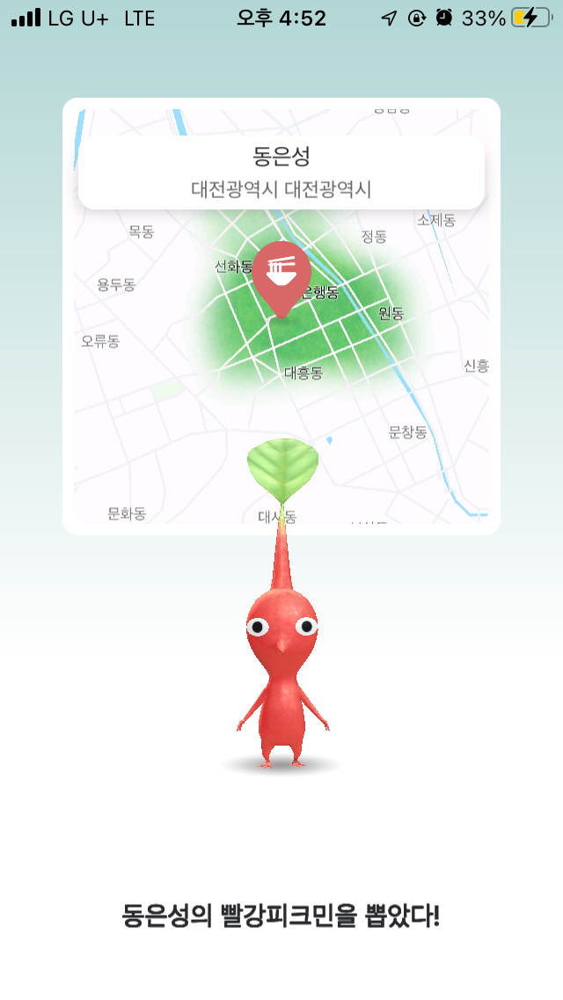
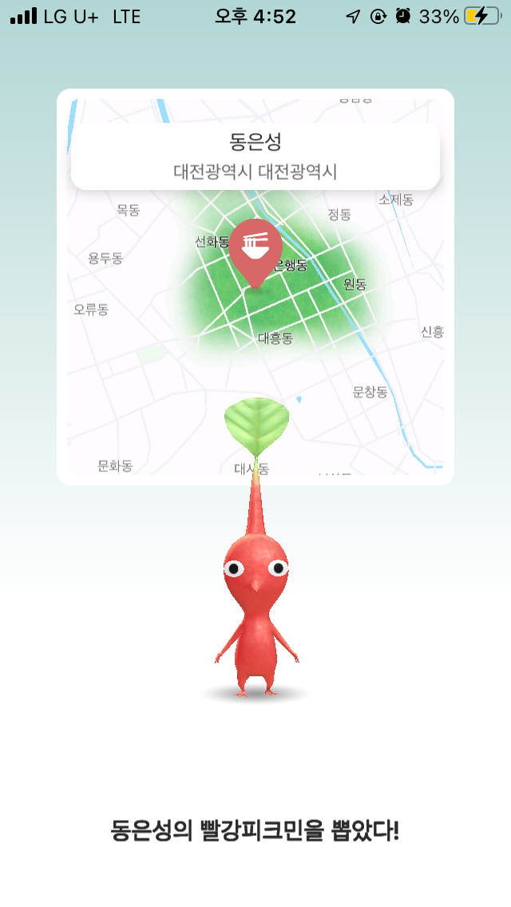
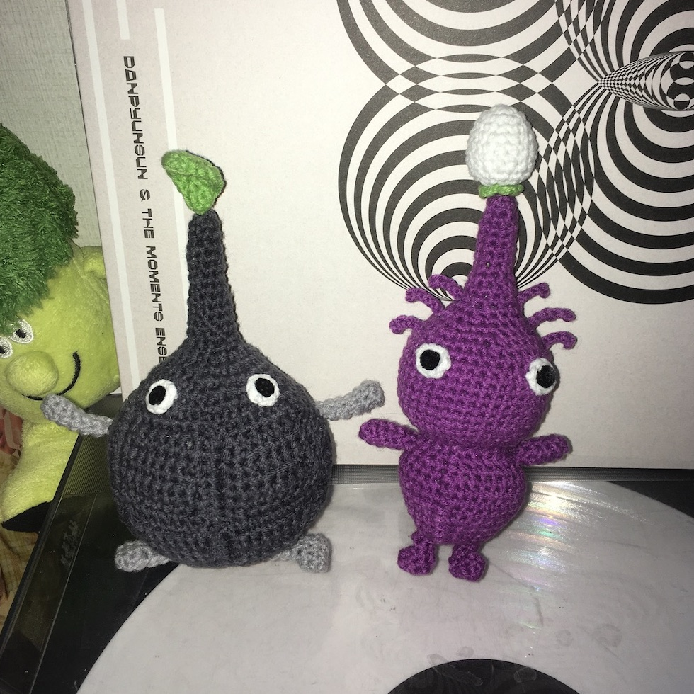
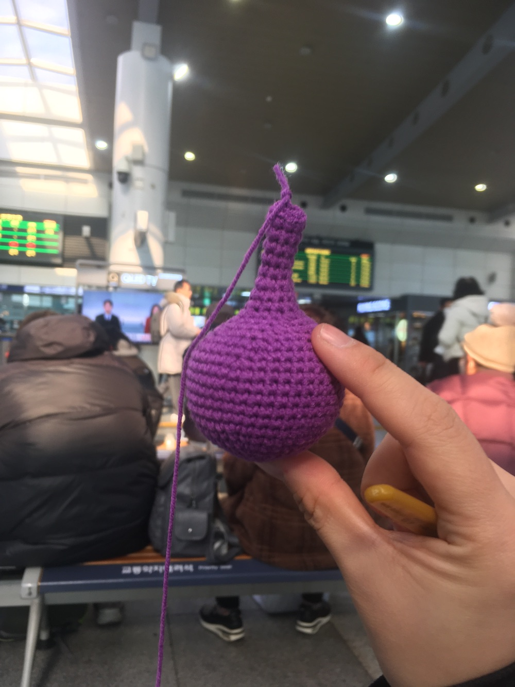
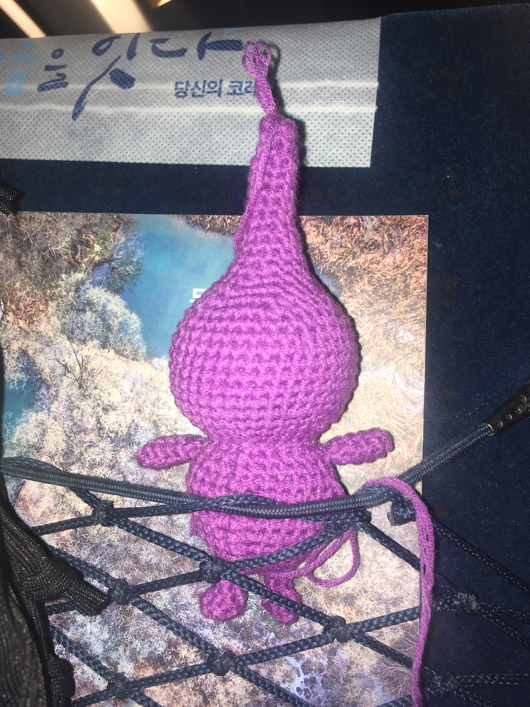
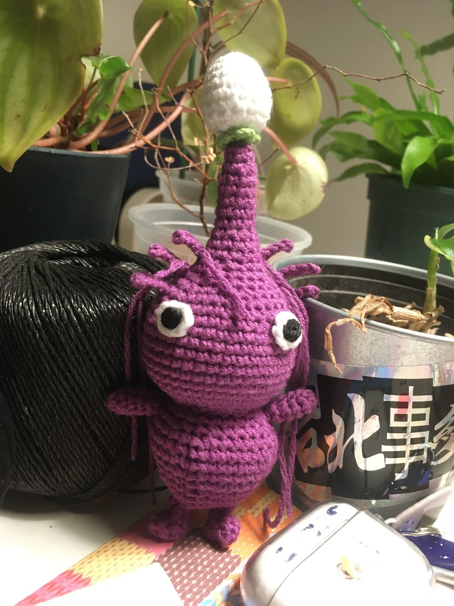
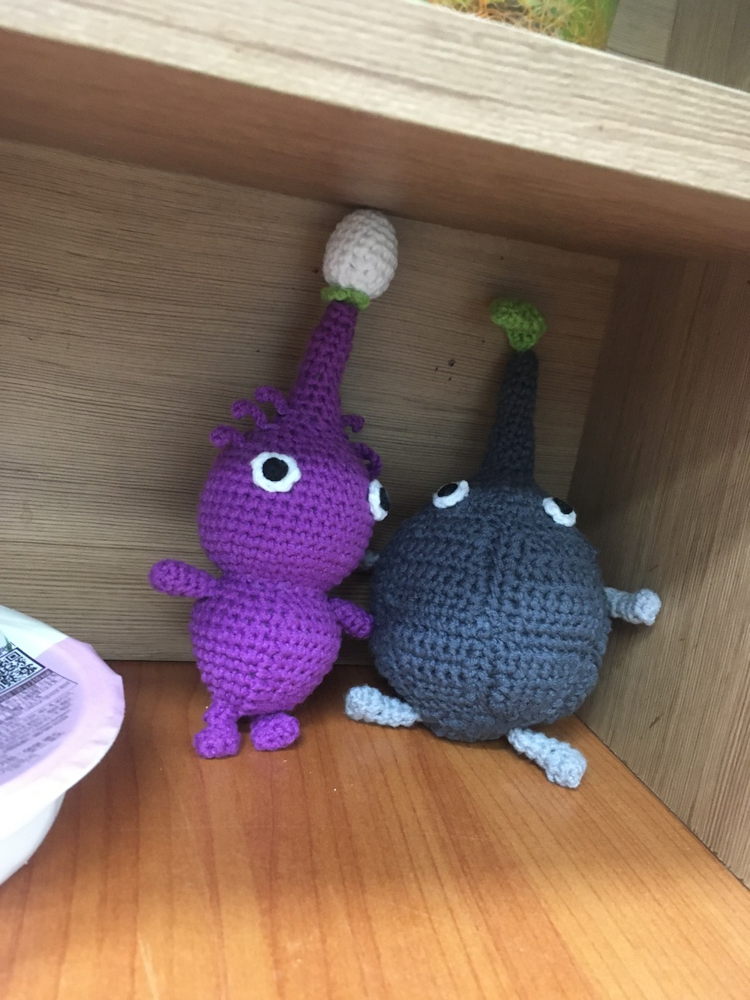

[대전은 OOO의 도시]에서 OOO은.. 아무래도..
튀김소보로판타롱부추빵보문산메아리애플브리치즈샌드위치를배출한
대전 문화의 중심
‘성심당’
이 아니라
정답은 ‘피크민’이었습니다~
서울시 노원구 거주자 어떤 사람에 의하면 대전은 피크민의 도시였다네요!
 

우와~
여러 타이밍이 맞아서 얼마 전 주말에 대전 여행을 다녀왔다. 대전은 역시 아름다운 밀가루를 기반으로 한 맛잘알 도시였다.
피크민을 즐겨하는 친구가 몇 있는데 마침 여행을 같이 다녀온 친구가 피크민에 진심이라 얼결에 대전에서 피크민을 시작했다. 또 마침 피크민데이? 그거여서 레벨업도 빨랐던 것 같다. 하여간 대전에서 시작한 탓에 모든 초창기 피크민들이 다 대전 출신이 되어버렸다. 대전 중앙동과 선화동, 은행동? 성심당 근처의 빨강피크민을 획득하기도 하고….
피크민 게임은 안했더래도 붐인 건 또 알아서 피크민 뜨개 도안도 애진작에 다운 받아놓고 있었다. 피크민 인형을 뜨겠다며 호기롭게 선언 후… 바위 피크민의 몸통이 생각보다 영 마음에 들지 않게 떠져서 외면하고 있었는데 피크민을 시작하고 보니 다시 완성할 용기가 생겼다!
피크민 생김새도 사실 모른 채로 바위 피크민과 보라 피크민 도안을 다운 받았었는데, 바위 피크민 인형이 귀엽게 생겨서 먼저 도전했었다.
바위 피크민 도안이 조각조각을 떠서 하나로 만드는 방식이라, 아 원형의 큰 몸통을 이런 식으로 만드는구나 하고 막연히 생각했었는데 피크민을 하고 나서 보니 바위 피크민의 각진 몸통을 나름 구현하려고 한 도안인 것을 깨달았다! 그걸 모르고 몸통이 원형으로 빵빵하게 만들어지지 않은 게 너무 마음에 안들었는데.. 이제 보니 울퉁불퉁한 게 포인트인 도안이었다. 정신승리다!
 대전으로 가는 길에 보라피크민을 뜨기 시작해서 집으로 돌아올 때 쯤에 더듬이까지 거의 완성했다. 여행 갈 때 인형솜까지 챙겨간 사람 어떤데…
역시나 공예의 영역이 나를 힘들게 하였으나, 피크민의 완성은 아무래도 멍청한 눈동자에 있기 때문에 기운 내서 순간접착제도 새로 사서 손쉽게 마무리했다. 진짜 코바늘하면서 또 깨달았는데, 순간접착제는 굉장한 발명품이다. 보라피크민은 원본 보다는 조금 슬림하게 완성됐지만.. 어쩔 수 없다..
근데 피크민을 하고 보니 나는 날개피크민이 제일 귀여운 듯. 눈동자가 없는 편이 마음에 든다.
피크민 게임은 사실 일주일 만에 조금 흥미를 잃었다. 내 폰에 비해 좀 과분한 게임이라 돌아다니면서 하기가 어렵다. 날개 피크민까지 떠보고 피크민 졸업해야겠다.
